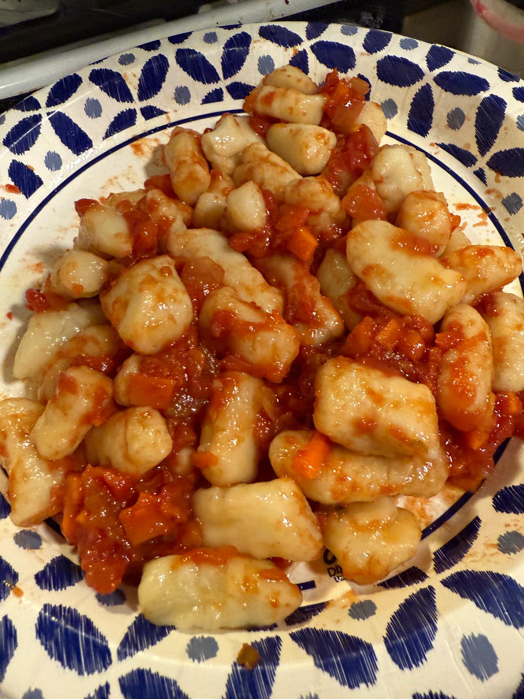
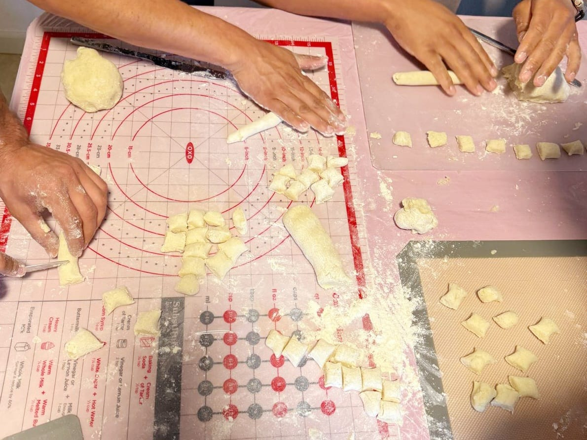
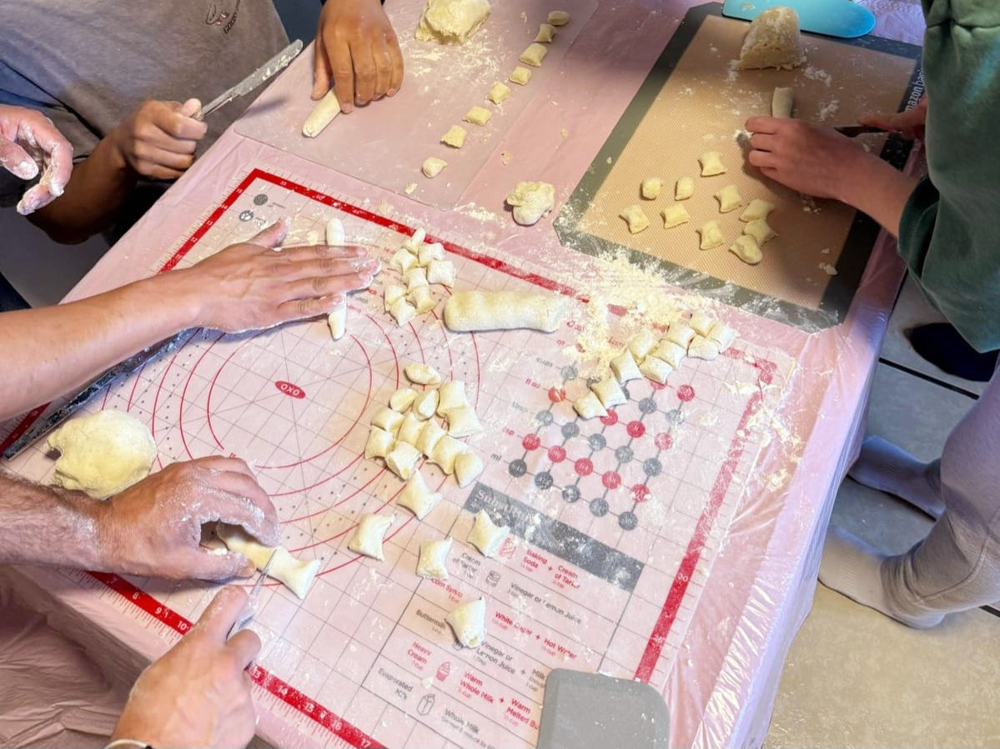
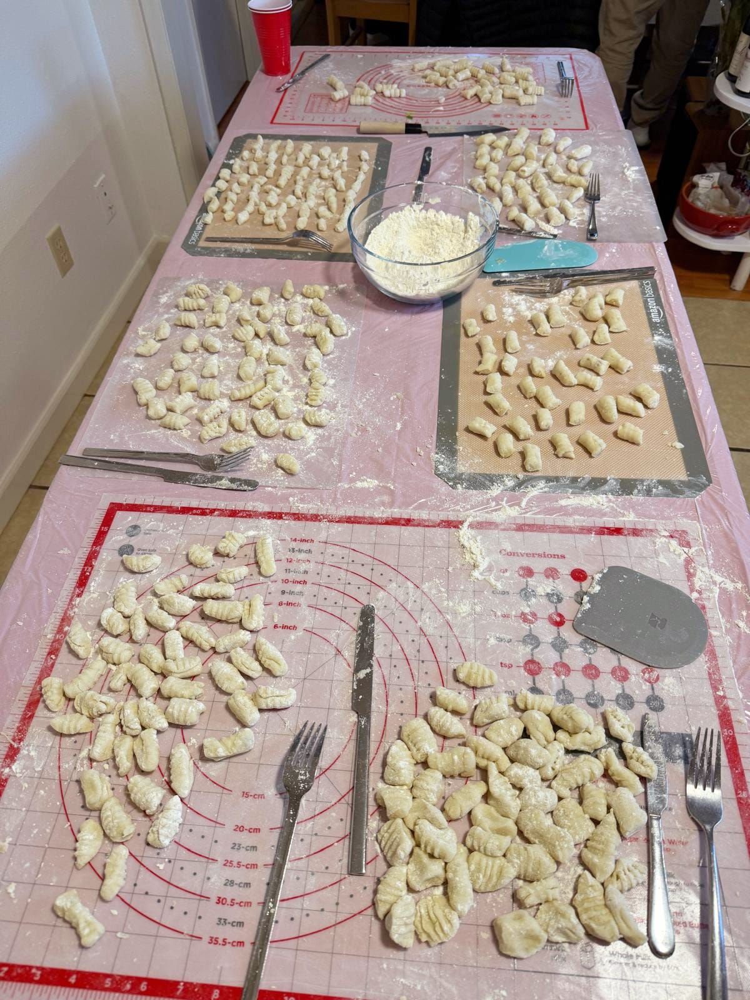

Recipe Overview
- Servings: 5
- Prep Time: 60 minutes
- Cook Time: 40 minutes
- Total Time: 1 hour 40 minutes
- 1 Can (794 g / 1 lb) whole peeled tomatoes
- 1 Medium onion, diced
- 1 Carrot, diced
- 1 Celery stalk, diced
- 1 tsp salt
- 1 tbsp water
- 1 tbsp olive oil
- Optional: Fresh basil
- 1 kg (about 2.2 lb) russet potatoes
- 500 g (about 4 cups) all-purpose flour
- 1 tsp salt
- Optional: 1 egg. Ignore to make the gnocchi lighter.
- Optional: Grated parmigiano romano cheese for serving
- Prep: Dice the onion, carrot, and celery.
- Cook: In a saucepan, add the diced onion and water. Sauté on medium heat until the onion is translucent.
- Add veggies: Add the diced carrot and celery. Cook for 5-10 minutes until softened.
- Add tomatoes: Add the can of whole peeled tomatoes (with juice). Use a fork to break up the tomatoes.
- Aromatics: Add a pinch of salt, more if the tomatoes are acidic, and the basil. Cook for 5 minutes.
- Simmer: Simmer on low heat for 10-15 minutes until the sauce thickens. Stir occasionally.
- Finish: Taste and adjust seasoning. Optionally add a drizzle of olive oil before serving.
- Boil water with salt: In a pot place enough water to cover the potatoes. Add a generous pinch of salt. Allow the water to come to a boil.
- Wash the potatoes:Wash off impurities but do not peel off the skin.
- Cook the potatoes: Boil whole potatoes with skin on until tender enough to pierce with a knife (30–40 min). Drain and cool slightly.
- Rice & cool: Peel while warm and pass through a potato ricer (or mash).
- Make the dough: Mix the potatoes with the flour and gently combine until a dough forms.
- Optional: Add the egg and a pinch of salt. Mix well into the dough.
- Shape: Divide into 4 pieces. Roll each piece into a snake like tube.
- Cut Cut tubes into 2 cm (~3/4 in) thick pieces.
- Texture Optionally roll on a fork for ridges.
- Rest: Rest gnocchi on a floured surface, dust some flour over them as well, for 10-20 minutes. This will help make the gnocchi stay firm while cooking.
- Boil water with salt: In a pot place enough water to fill half the pot. Add a generous pinch of salt. Allow the water to come to a boil.
- Cook: Boil in salted water; add just enough so that there's a single layer of gnocchi at the bottom of the pot. As the gnocchi start to float (~2-3 min) transfer them to a pan or plate.
- Serve: Finish with the homemade sauce and parmigiano!
- Work while potatoes are warm so flour incorporates evenly.
- Use as little flour as possible for tender gnocchi.